[PROPERTY TYPE]

Veo 3 + Imóveis
Montagem Gradual
Biblioteca prática para criar vídeos em que casas, apartamentos, lojas, cômodos e móveis surgem aos poucos, com estética premium de arquitetura, reforma, decoração e apresentação imobiliária.
01
Variáveis para Substituir
Troque os campos entre colchetes para adaptar o prompt ao tipo de imóvel, cômodo, estilo, material e movimento desejado.
[ROOM]
living room, bedroom, kitchen, bathroom, home office, dining room
[STYLE]
modern, minimalist, luxury, rustic, Scandinavian, industrial, Japandi, classic
[MATERIALS]
wood, marble, glass, concrete, steel, stone, ceramic
[FURNITURE]
sofa, bed, table, cabinet, wardrobe, kitchen island, shelves
[CAMERA STYLE]
cinematic dolly shot, smooth orbit shot, drone shot, fixed tripod shot, slow push-in
[TIME OF DAY]
morning, golden hour, sunset, night
02
Fluxo de Montagem Gradual
Use a lógica abaixo para escolher rapidamente o tipo de animação antes de copiar um prompt.
Imóveis
Construção
Terreno vazio, fundação, paredes, telhado, fachada, iluminação e paisagismo surgindo em sequência.
Arquitetura
Apresentação premium
Peças, módulos, planta baixa, energia, drones ou corte arquitetônico revelando o projeto final.
Interiores
Decoração
Piso, paredes, luzes, móveis, tecidos, plantas e objetos entrando em composição de forma elegante.
Reforma
Antes e depois
Ambientes antigos se transformam em espaços prontos, modernos e com acabamento profissional.
03
Prompts para Imóveis e Arquitetura
Prompts para casas, apartamentos, villas, lojas, escritórios, construções modulares e apresentações imobiliárias.
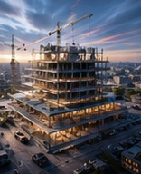
Prompt 01
Construção Time-Lapse Realista
Prompt em inglês
Create a cinematic time-lapse video of a [PROPERTY TYPE] being built from the ground up. Workers, construction tools, scaffolding, concrete, bricks, wooden frames, walls, roof, windows, doors, exterior finishes and landscaping appear progressively in a smooth accelerated construction sequence. The camera remains stable with a professional architectural composition, showing the full building process from empty land to a finished beautiful property. Realistic lighting, natural shadows, high-end real estate visual style, smooth motion, professional video quality.
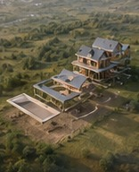
Prompt 02
Casa Surgindo do Terreno em Camadas
Prompt em inglês
Create a cinematic video where a [PROPERTY TYPE] gradually assembles itself on an empty plot of land. The foundation appears first, then floor structure, walls, windows, roof, exterior materials, lighting, garden, pathway and final landscaping appear layer by layer. Each part slides, rises and locks perfectly into place like a premium architectural assembly animation. Smooth camera movement, realistic materials, elegant lighting, professional real estate presentation.
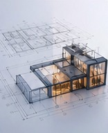
Prompt 03
Planta Baixa Virando Imóvel Real
Prompt em inglês
Create a cinematic video starting with a clean architectural floor plan on the ground. The lines of the blueprint glow softly, then rise upward and transform into real walls, floors, windows, doors, furniture and final interior details. The [PROPERTY TYPE] gradually becomes fully built from the blueprint, with a smooth magical yet realistic transformation. Elegant architectural visualization, premium lighting, smooth camera orbit, high-quality cinematic finish.
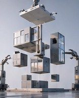
Prompt 04
Construção com Trabalhadores em Movimento Rápido
Prompt em inglês
Create a realistic construction time-lapse of workers building a [PROPERTY TYPE]. Workers move quickly but naturally, carrying materials, installing walls, painting surfaces, placing windows, assembling the roof and adding exterior finishes. The scene evolves from raw construction site to polished finished property. Cinematic documentary style, professional camera angle, natural daylight, realistic textures, clean architectural composition.
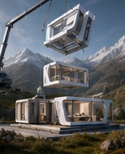
Prompt 10
Construção Modular Futurista
Prompt em inglês
Create a futuristic modular assembly video of a [PROPERTY TYPE]. Large architectural modules float into the scene and connect perfectly: floor modules, wall panels, glass windows, roof sections, balcony, interior modules and exterior landscaping. The building assembles smoothly like advanced smart construction technology. Cinematic sci-fi realism, premium architectural visualization, smooth drone camera movement, realistic materials.
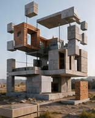
Prompt 13
Construção por Peças de LEGO Realistas
Prompt em inglês
Create a playful yet realistic architectural assembly video of a [PROPERTY TYPE] being built block by block. Realistic construction pieces stack and connect progressively, forming the foundation, walls, roof, windows, doors, interior and landscaping. The final result becomes a polished real property, not a toy. Smooth time-lapse motion, cinematic camera angle, premium architectural visualization.
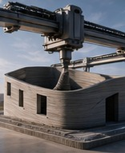
Prompt 15
Casa Sendo Impressa em 3D
Prompt em inglês
Create a cinematic video of a [PROPERTY TYPE] being gradually created through a large-scale 3D printing process. Layers of material are printed smoothly from the foundation upward, forming walls, structure, roof, windows, doors and final exterior finishes. The scene ends with a fully completed modern property. Realistic construction technology style, smooth time-lapse movement, professional architectural lighting.
Prompt 24
Imóvel Surgindo com Energia Dourada
Prompt em inglês
Create a cinematic video where golden energy lines outline a [PROPERTY TYPE] and gradually turn into real architecture. The glowing lines form the foundation, walls, windows, roof, facade details, interior lights and landscaping. The energy fades, revealing a finished elegant property. Premium magical realism, golden hour lighting, smooth architectural camera movement, high-end real estate presentation.
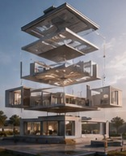
Prompt 25
Construção Reversa Explodida que se Junta
Prompt em inglês
Create a cinematic exploded-view assembly video of a [PROPERTY TYPE]. Architectural components float separately in space, then move inward and connect perfectly: foundation, walls, beams, windows, roof, doors, interiors and landscaping. The final property appears complete and polished. Smooth controlled motion, premium architectural visualization, realistic materials, professional lighting.
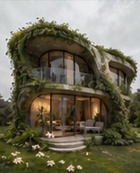
Prompt 27
Casa Crescendo Organicamente
Prompt em inglês
Create a cinematic video where a [PROPERTY TYPE] grows organically from the ground like a natural architectural structure. Foundations emerge, walls rise smoothly, wooden beams extend, windows form, roof appears, plants grow around the property and the final design becomes a harmonious finished home. Natural motion, warm lighting, realistic materials, elegant architectural visualization.
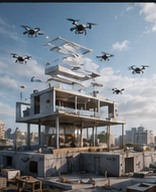
Prompt 31
Imóvel Sendo Montado por Drone
Prompt em inglês
Create a cinematic construction video where small futuristic drones assemble a [PROPERTY TYPE]. Drones carry panels, glass, beams, roof sections, lights and decorative exterior details, placing everything precisely. The property gradually transforms from an empty site into a finished modern building. Smooth drone-style camera movement, realistic materials, premium architectural visualization.
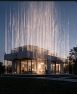
Prompt 34
Casa Sendo Revelada por Cortina de Luz
Prompt em inglês
Create a cinematic video where a curtain of light sweeps across an empty lot, revealing a finished [PROPERTY TYPE] progressively from left to right. As the light passes, foundation, walls, windows, roof, facade, garden and lighting appear in perfect detail. Smooth elegant reveal, premium real estate style, realistic materials, cinematic atmosphere.
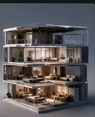
Prompt 39
Imóvel Montado em Corte Arquitetônico
Prompt em inglês
Create a cinematic architectural cutaway video of a [PROPERTY TYPE] being assembled gradually. Show the structure forming from foundation to walls, rooms, furniture, lighting, roof and exterior landscaping while the camera reveals the interior layout clearly. Premium real estate visualization, smooth motion, realistic materials, elegant lighting and professional composition.
04
Prompts para Decoração de Ambientes
Prompts para salas, quartos, cozinhas, banheiros, home office, showroom e móveis surgindo ou se montando gradualmente.
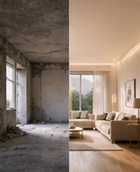
Prompt 05
Reforma Antes e Depois em Transição Gradual
Prompt em inglês
Create a cinematic renovation transformation video of a [ROOM] in [STYLE] style. The old room gradually changes as walls are repainted, flooring is replaced, lighting fixtures appear, furniture slides into place, decorations are added, and the final room becomes modern, elegant and fully designed. Use a smooth before-and-after transformation with professional interior design presentation, realistic lighting and polished cinematic motion.
Prompt 06
Móveis Saindo de uma Caixa Mágica
Prompt em inglês
Create a cinematic video of a closed box placed in the center of an empty [ROOM]. The box opens and elegant [STYLE] furniture pieces begin to emerge one by one, floating gently into position. A sofa, table, shelves, lamps, rug, curtains and decorations arrange themselves naturally to complete the room. Smooth magical motion, warm lighting, premium interior design look, clean composition, realistic materials, professional video quality.
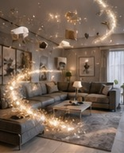
Prompt 07
Decoração Surgindo Como Magia
Prompt em inglês
Create a magical interior design reveal video of an empty [ROOM]. Sparkling particles flow through the space, and each element appears gradually: flooring, wall color, lighting, [FURNITURE], rug, curtains, artwork, plants and decorative objects. Everything materializes smoothly in perfect harmony, creating a finished [STYLE] interior. Cinematic lighting, elegant camera movement, premium real estate presentation, refined magical atmosphere.
Prompt 08
Móveis Montando Sozinhos Peça por Peça
Prompt em inglês
Create a cinematic video where [FURNITURE] assembles itself piece by piece inside a [ROOM]. Wooden panels, screws, legs, drawers, cushions and decorative details float into position and connect smoothly with realistic motion. The furniture becomes fully completed and perfectly placed in the room. Premium product assembly style, clean background, realistic materials, smooth camera movement, professional lighting.
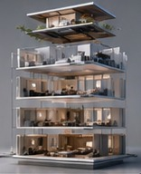
Prompt 09
Apartamento Sendo Decorado em Camadas
Prompt em inglês
Create a cinematic interior animation of a [STYLE] apartment being decorated layer by layer. Start with an empty space, then flooring appears, wall finishes appear, ceiling lights turn on, furniture slides into place, textiles unfold, plants and decorative objects appear, and the final apartment becomes elegant and ready to live in. Smooth transitions, premium interior design aesthetic, realistic lighting, clean camera movement.
Prompt 11
Cômodo Montado por Ondas de Luz
Prompt em inglês
Create a cinematic video where waves of soft light pass through an empty [ROOM], gradually revealing the complete interior design. As each light wave moves across the space, walls gain texture, the floor becomes finished, furniture appears, lamps turn on, curtains unfold, artwork appears and decorations settle into place. Elegant magical realism, smooth camera movement, premium [STYLE] interior design, high-end lighting.
Prompt 12
Móveis Entrando por Movimento Coreografado
Prompt em inglês
Create a smooth cinematic video of an empty [ROOM] being furnished through choreographed motion. Furniture pieces enter the frame from different directions, sliding, rotating and settling perfectly into their final positions. A [FURNITURE], rug, lighting, plants, wall art and accessories complete the composition. Elegant interior design animation, realistic materials, professional lighting, satisfying smooth movement.
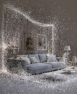
Prompt 14
Ambiente Surgindo a Partir de Partículas
Prompt em inglês
Create a cinematic video where thousands of fine particles gather inside an empty [ROOM] and gradually form the complete interior. Particles assemble into floors, walls, furniture, lighting, textiles, plants and decorative objects. The final room becomes a beautiful [STYLE] interior with realistic materials and premium lighting. Smooth particle motion, magical atmosphere, elegant camera movement, professional video quality.
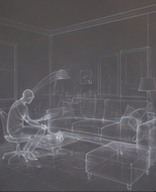
Prompt 16
Decoração com Toque Invisível
Prompt em inglês
Create a cinematic video of an empty [ROOM] being decorated by an invisible designer. Furniture moves into position by itself, cushions arrange neatly, curtains unfold, lights turn on, plants appear, artwork aligns on the wall and decorative objects settle perfectly. Smooth elegant motion, premium [STYLE] interior design, warm realistic lighting, professional real estate video style.
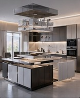
Prompt 17
Montagem de Cozinha Planejada
Prompt em inglês
Create a cinematic assembly video of a [STYLE] kitchen being installed gradually. Start with an empty room, then cabinets attach to the walls, countertops slide into place, a kitchen island appears, appliances fit perfectly, lighting turns on, backsplash tiles appear, and decorative items complete the space. Smooth professional motion, realistic materials like [MATERIALS], premium interior design presentation.
Prompt 18
Quarto Sendo Montado de Forma Cinemática
Prompt em inglês
Create a cinematic video of an empty bedroom transforming into a finished [STYLE] bedroom. The bed frame assembles, mattress and bedding unfold smoothly, bedside tables slide into place, wardrobe appears, curtains fall naturally, lamps turn on, rug rolls out and decor elements complete the room. Soft lighting, cozy atmosphere, smooth camera push-in, premium interior design quality.
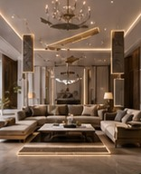
Prompt 19
Sala de Estar com Montagem Luxuosa
Prompt em inglês
Create a cinematic video of a [STYLE] living room assembling gradually. A sofa appears and settles into place, coffee table slides in, rug unfolds, shelves build themselves, wall art appears, curtains open, lamps turn on, plants grow into position and decorative objects complete the space. Elegant motion, warm lighting, realistic textures, premium real estate visual style.
Prompt 20
Banheiro Surgindo com Água e Luz
Prompt em inglês
Create a cinematic transformation video of an empty bathroom becoming a finished [STYLE] bathroom. Tiles appear across the walls and floor, sink, mirror, shower glass, bathtub, fixtures and lighting assemble smoothly. Soft reflections, clean surfaces, realistic water highlights and elegant materials create a premium spa-like atmosphere. Smooth camera movement, high-end interior visualization.
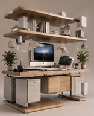
Prompt 21
Escritório Montado por Fluxo Digital
Prompt em inglês
Create a cinematic video of an empty home office being assembled by a futuristic digital interface. Glowing grid lines scan the room, then desk, chair, shelves, lighting, computer setup, plants and decor appear gradually and lock into place. The final office becomes a clean [STYLE] productive workspace. Smooth digital animation, realistic materials, premium lighting, professional composition.
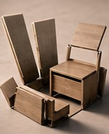
Prompt 22
Móveis Dobrando e Desdobrando
Prompt em inglês
Create a cinematic video where flat panels and folded shapes unfold into complete furniture inside a [ROOM]. A [FURNITURE], shelves, table, chairs and decor pieces unfold elegantly like precision origami, then settle into a finished [STYLE] interior. Smooth mechanical motion, satisfying assembly, realistic materials, clean lighting, premium design animation.
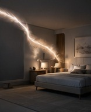
Prompt 23
Ambiente Sendo Pintado no Ar
Prompt em inglês
Create a cinematic video where an invisible brush paints an empty [ROOM] into existence. First the walls gain color, then flooring appears, furniture is drawn into the scene, lighting forms, textiles and decorations appear with elegant brush-like strokes. The final result is a fully decorated [STYLE] room. Artistic magical motion, smooth camera movement, refined lighting, premium visual finish.
Prompt 26
Decoração com Portal Mágico
Prompt em inglês
Create a cinematic video of an empty [ROOM] with a glowing portal opening in the center. Furniture and decor elements gently emerge from the portal and arrange themselves around the room: [FURNITURE], rug, lamps, plants, curtains and artwork. The portal closes after the room becomes fully decorated in [STYLE] style. Magical elegant motion, cinematic lighting, realistic textures.
Prompt 28
Cômodo Montado por Comandos de Interface
Prompt em inglês
Create a cinematic interior design video where a clean digital interface controls the assembly of a [ROOM]. Minimal UI markers select the floor, walls, furniture, lights, plants and decorations, and each item appears smoothly in place. The final room becomes a polished [STYLE] interior. Futuristic design presentation, smooth camera movement, realistic materials, premium lighting.
Prompt 29
Móveis Surgindo de Sombras
Prompt em inglês
Create a cinematic video of an empty [ROOM] where soft shadows gradually transform into real furniture and decorations. Dark silhouettes appear first, then become detailed objects: sofa, table, lamps, rug, plants, shelves and wall art. The room slowly becomes a complete [STYLE] interior. Moody cinematic lighting, smooth transformation, realistic materials, elegant atmosphere.
Prompt 30
Montagem por Estalo de Dedos
Prompt em inglês
Create a cinematic video where an empty [ROOM] transforms after a magical finger snap. With each subtle pulse of light, a new layer appears: flooring, wall finish, furniture, lighting, textiles, plants and decorations. The final space becomes a fully designed [STYLE] room. Smooth magical transitions, professional interior design look, warm realistic lighting, elegant camera movement.
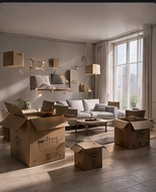
Prompt 32
Decoração com Caixa de Mudança
Prompt em inglês
Create a cinematic video of moving boxes inside an empty [ROOM]. The boxes open one by one and furniture, textiles, lighting, books, plants and decorative objects float out and arrange themselves perfectly. The room gradually becomes a cozy finished [STYLE] interior. Smooth magical motion, realistic textures, warm lighting, professional home staging style.
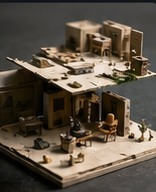
Prompt 33
Montagem Estilo Stop Motion Premium
Prompt em inglês
Create a premium stop-motion style video of a [ROOM] being decorated gradually. Furniture pieces appear frame by frame, the rug unrolls, chairs move into place, shelves fill with objects, lamps turn on and decorations align perfectly. Keep the motion clean, charming and satisfying, with realistic materials, soft lighting and a polished interior design result.
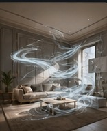
Prompt 35
Ambiente Montado com Fluxo de Vento
Prompt em inglês
Create a cinematic video where a soft wind flows through an empty [ROOM], carrying fabric, dust particles and light. As the wind moves, curtains unfold, rug rolls out, furniture appears, lamps turn on, plants settle into place and decor completes the scene. Elegant [STYLE] interior, smooth natural motion, warm lighting, premium visual quality.
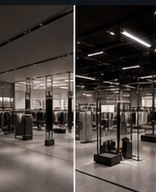
Prompt 36
Montagem de Loja ou Showroom
Prompt em inglês
Create a cinematic video of an empty commercial space transforming into a finished [STYLE] showroom. Display shelves assemble, counters appear, lighting tracks turn on, products arrange themselves, signage elements integrate cleanly into the design, plants and decor complete the space. Smooth professional motion, premium commercial interior visualization, realistic materials and lighting.
Prompt 37
Móveis Entrando em Sincronia Musical
Prompt em inglês
Create a cinematic interior assembly video where furniture and decor move into place with rhythmic, synchronized motion. A [ROOM] starts empty, then each item appears in a satisfying sequence: [FURNITURE], table, chairs, lighting, rug, curtains, plants and decor. Smooth elegant timing, premium [STYLE] design, professional lighting, high-quality video finish.
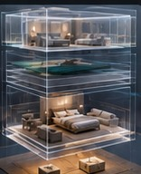
Prompt 38
Decoração Luxo por Camadas Transparentes
Prompt em inglês
Create a cinematic video where transparent ghost-like outlines of furniture appear first inside an empty [ROOM], then gradually become solid realistic objects. The floor, walls, lighting, [FURNITURE], textiles, plants and accessories materialize layer by layer into a complete luxury [STYLE] interior. Smooth camera orbit, realistic materials, refined lighting, premium architectural visualization.
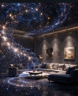
Prompt 40
Aparição Gradual com Poeira Cósmica
Prompt em inglês
Create a cinematic magical video where cosmic dust slowly gathers in an empty [ROOM] and forms a complete [STYLE] interior. Tiny glowing particles become furniture, lighting, rugs, curtains, plants and decorative objects. The scene ends with a fully furnished, elegant and realistic room. Smooth magical particle animation, refined atmosphere, premium interior design lighting.
05
Prompts Base Universais
Use estes modelos quando quiser partir de uma estrutura mais ampla e adaptar para qualquer projeto.
Base universal
Prompt Base Universal para Qualquer Projeto
Prompt em inglês
Create a cinematic video of a [PROPERTY TYPE or ROOM] being gradually assembled and revealed. Start from an empty or unfinished space, then progressively add structure, materials, furniture, lighting, textures, decorations and final styling. Use smooth satisfying motion, realistic materials, elegant transitions, professional architectural visualization, premium real estate presentation, cinematic lighting, clean camera movement and a polished final reveal in [STYLE] style.
Base universal
Prompt Base para Aparição Mágica de Móveis
Prompt em inglês
Create a cinematic magical interior design video inside a [ROOM]. Begin with an empty space, then furniture and decoration elements appear gradually through elegant magical motion. A [FURNITURE], rug, lights, curtains, plants, artwork and accessories float into place and complete the environment. Use realistic materials, smooth camera movement, refined lighting, premium [STYLE] interior design and a beautiful final reveal.
Base universal
Prompt Base para Time-Lapse de Construção
Prompt em inglês
Create a cinematic construction time-lapse of a [PROPERTY TYPE] being built step by step. Begin with an empty site, then show foundation, structure, walls, roof, windows, doors, exterior finishes, interior details and landscaping appearing progressively. Include realistic workers, tools and construction movement, smooth time-lapse pacing, professional camera composition, realistic lighting and a premium finished real estate reveal.
Base universal
Prompt Base para Decoração de Cômodo
Prompt em inglês
Create a cinematic interior decoration video of a [ROOM] transforming from empty to fully furnished. Flooring, wall finishes, lighting, [FURNITURE], textiles, plants, artwork and decorative objects appear gradually and arrange themselves with smooth elegant motion. The final result is a complete [STYLE] interior with realistic textures, warm lighting, professional composition and premium visual quality.
06
Dicas de Uso
Pequenos ajustes que ajudam o Veo a entender melhor a montagem gradual e manter o resultado com aparência imobiliária profissional.
Defina o ponto de partida
Use empty land, empty room, unfinished space ou old room para orientar claramente o início da transformação.
Escolha a mecânica visual
Time-lapse, camadas, partículas, interface digital, drones, peças flutuando ou movimento coreografado mudam o estilo do vídeo.
Feche com acabamento premium
Termine com realistic materials, premium real estate presentation, cinematic lighting e polished final reveal.